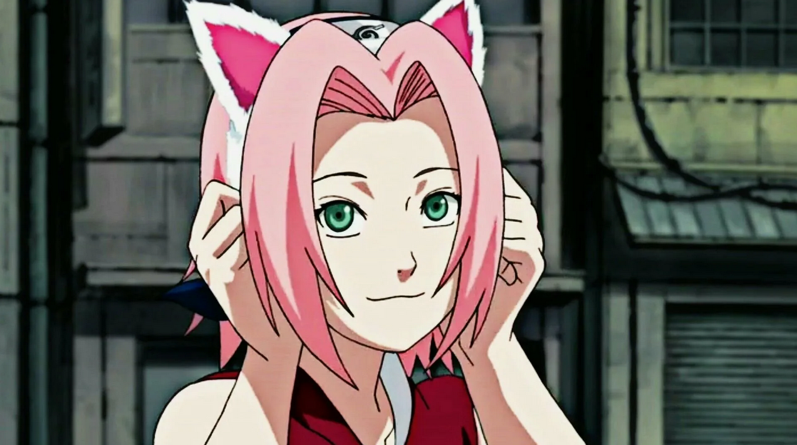
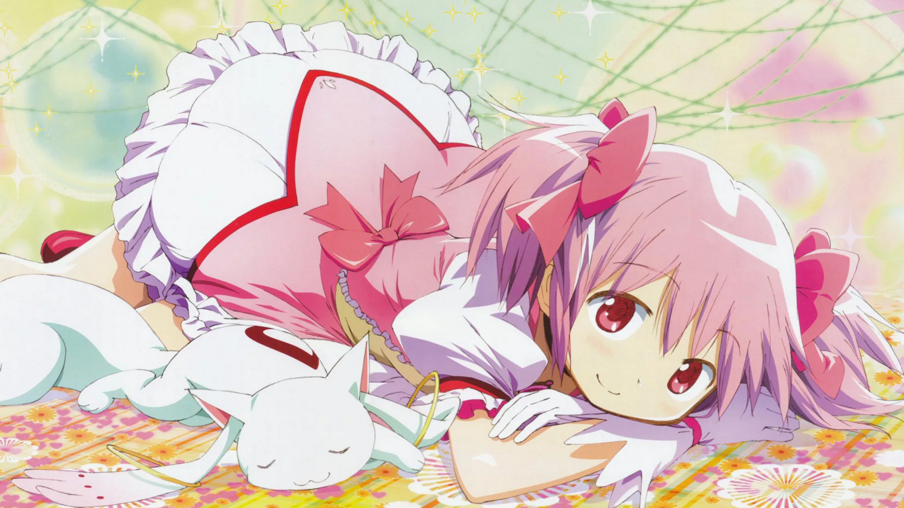
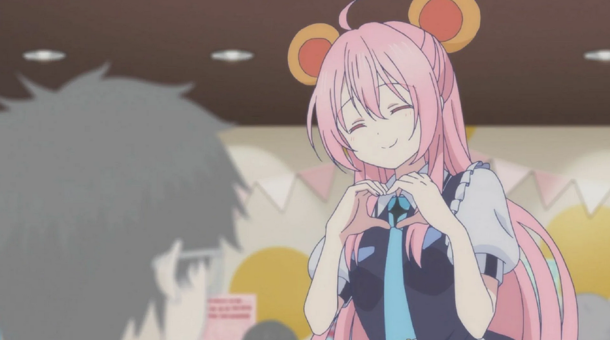

Сакура Харуно
Способности: из-за её сосредоточенности на учебе, Сакуре не хватало каких-либо особых боевых навыков, кроме базовых, которым она научилась в Академии. Это сильно ограничивало ее роль в миссиях, вплоть до того, что она часто отмечала, как сильно она полагается на своих товарищей по команде, Саске и Наруто. Однажды Шикамару даже назвал ее "куноичи без особого таланта". Полная решимости изменить себя, она проходит интенсивные тренировки с Цунаде в течение двух с половиной лет. Судя по ее мастерству, продемонстрированному в предыдущих частях Части II, другие отметили, что Сакура, скорее всего, превзойдет Цунаде. После завершения Силы сотни Печатей во время Четвертой мировой войны шиноби, она, наконец, догнала своих товарищей по команде в то время. Два года спустя она повышается до ранга джонин, и была способна в одиночку победить Кидо Цумики, несмотря на то, что Анбу были усилены наркотиком "Хвостатый зверь". Став взрослым, Боруто заметил, что она была подходящей заменой Наруто в качестве Хокаге.
Мадока Каманэ
Способности: Сверхчеловеческие физические характеристики, магия, полёт, космическое путешествие, энергетические атаки, наводящиеся атаки, мерные атаки, ударные волны, концептуальный урон, призыв, телепатия, телепортация, мета-абстрактность, высокоразмерное существование, метафизическое существование, концептуальное существование, эмоциональные манипуляции, манипуляции энергией, манипуляции светом, мерные манипуляции, манипуляции реальностью, манипуляции причинностью, манипуляции вероятностью, манипуляции временем, манипуляции пространством, биологические манипуляции, духовные манипуляции, концептуальные манипуляции, регенерация, внепричинность, бессмертие, огромный размер, манифестация (воплощение, аватар), вездесущность (локальная), экстрасенсорное восприятие (сенсор, космическая осведомлённость)
Сато Мацудзака
Способности: её беззаботная весёлая личность — всего лишь маска. На самом деле Сато — очень серьёзный человек, который постоянно оценивает ситуацию и просчитывает различные сценарии действий. Она может манипулировать людьми, обманывать их и даже убивать, если это необходимо для достижения цели (возможности остаться с Сио). Сато злится, когда видит в ком-то угрозу для Сио. Например, во владельце квартиры и в Асахи Кобэ, которого она чуть не убила ломом, когда он произнёс клятву Сио во сне. Хотя Сато понимает, что убийство уменьшает её шансы быть с Сио, она всё равно готова на это, чтобы защитить их отношения. Но чаще она всё планирует заранее и старается не доходить до насилия — например, она не убивала Сумирэ, а просто поцеловала, чтобы заставить заткнуться.